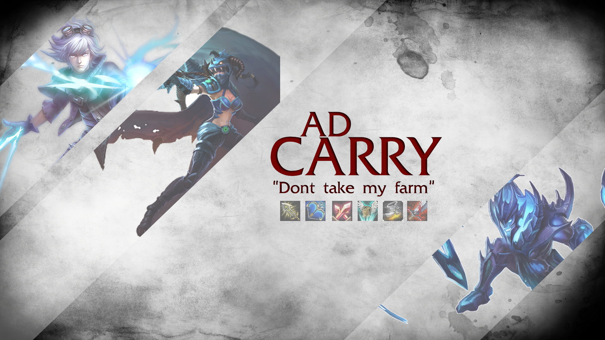
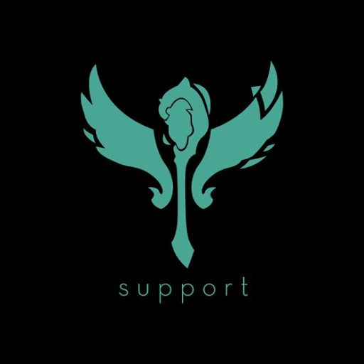
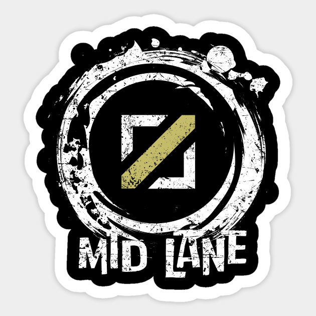
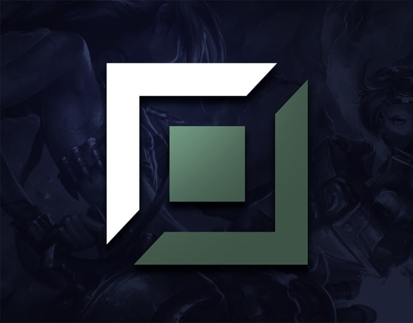

|  | También conocido como o AD Carry (Attack Damage Carry) o simplemente Carry, se trata de un personaje capaz de realizar mucho daño pero sin apenas habilidades de supervivencia. Lo que popularmente se conoce como “cañón de cristal”. Sin embargo, necesita mucho oro y objetos para hacerse poderoso, por lo que requiere la ayuda de un suport para levear. En League of Legends el ADC suele ser un personaje que va a la línea de BOT con un support, y es un personaje de rango o a distancia. |
|  | En este videojuego la persona encargada de tareas como curar, wardear, zonear y/o proteger, se le conoce comúnmente como Support, y es un jugador encargado de proteger al ADC (Attack Damage Carry) del equipo rival durante la mayor parte del juego. |
|  | La línea de mid es la que más cerca está de la gran mayoría de objetivos que hay en partida: misma distancia a ambos monstruos neutrales más importantes, orientación para balancear el mapa hacia el lado que convenga, línea más corta en cuanto a longitud y, por tanto, con más impacto por parte de los junglas. Entonces, lo que ocurra tiene impacto directo en el resto de la grieta, por pequeño que sea: de una torre o una kill hasta un ward colocado en jungla rival o una rotación que te haga la fase de líneas más asequible. |
|  | La linea de TOP. Es el carril superior de la grieta del invocador, donde suele encontrarse dos jugadores (uno de cada equipo). En esta línea se usan todo tipo de campeones, tanto tanques como campeones con daño, aunque por lo general son tanques que servirán como línea defensiva en las peleas de equipo. El top se encuentra por así decirlo fuera de la zona de acción (que suele ser la zona de mid y bot), y esto provoca que sea una línea de constante luchas entre los jugadores, aunque puede aparecer un jungla y participar. Suelen hacer apariciones en el resto del mapa usando el tp y apoyando en la toma de objetivos. |
| Jungla o Jungler se considera una posición similar a ir a un carril pero que involucra matar a los "Monstruos" neutrales localizados en las zonas entre las líneas. Los Junglers se dedican a "farmear" los campamentos disponibles en la Jungla. Jungla hace referencia a cualquier área del mapa que no sea un carril o parte de la base de cualquier equipo, incluyendo el río que divide La Grieta del Invocador. Junglear es un rol limitado a la Grieta del Invocador, y en menor medida al Bosque Retorcido, ya que no es una gran parte de la estrategia del equipo debido al pequeño tamaño del mapa y a que la jungla provee un farmeo menos consistente. |